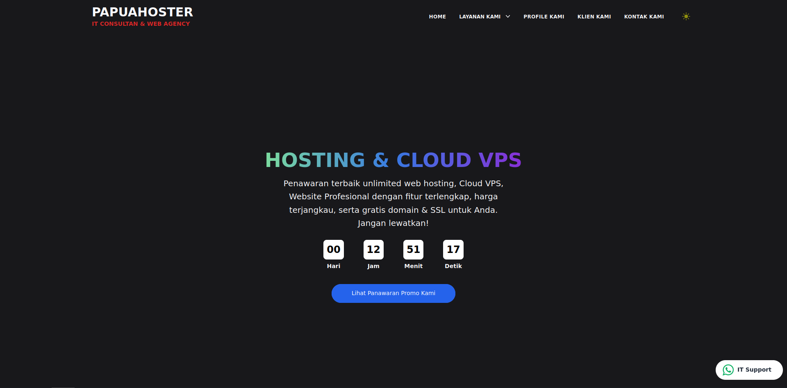
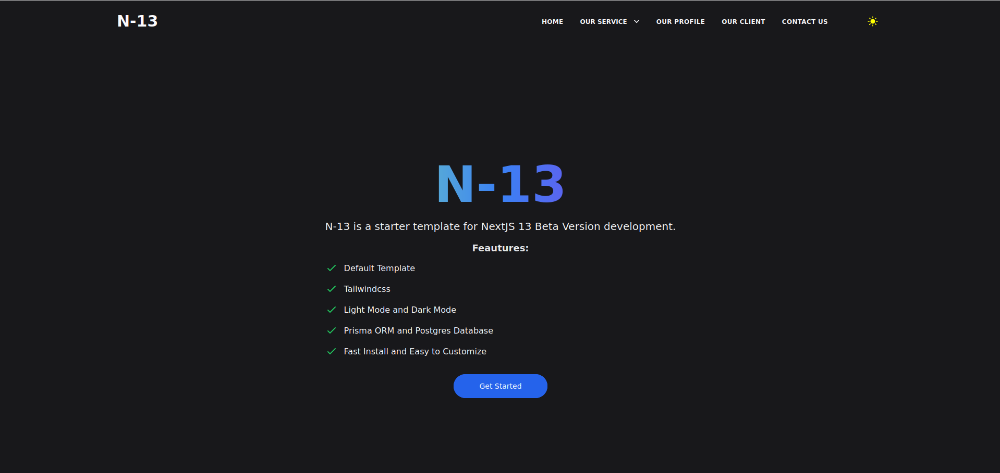
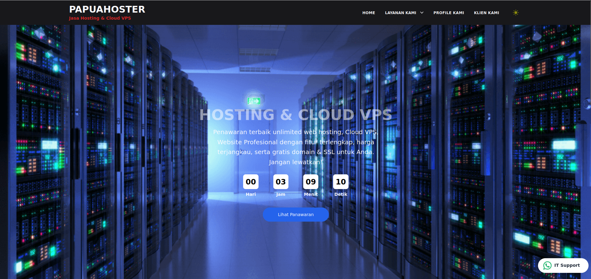
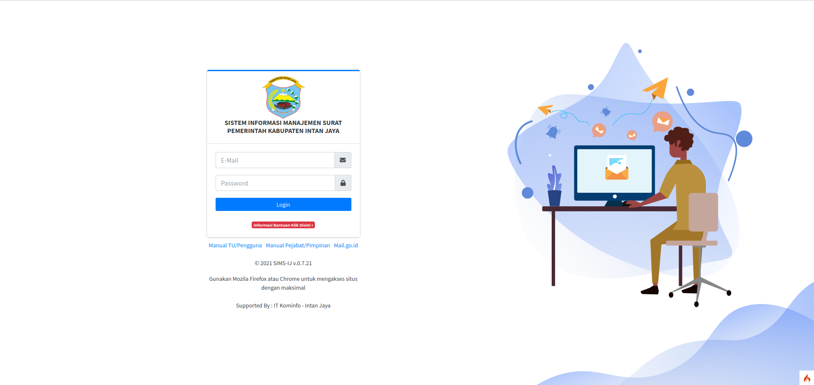
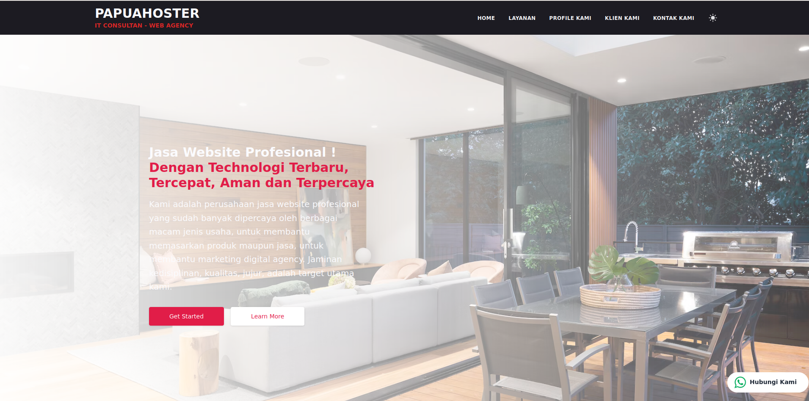
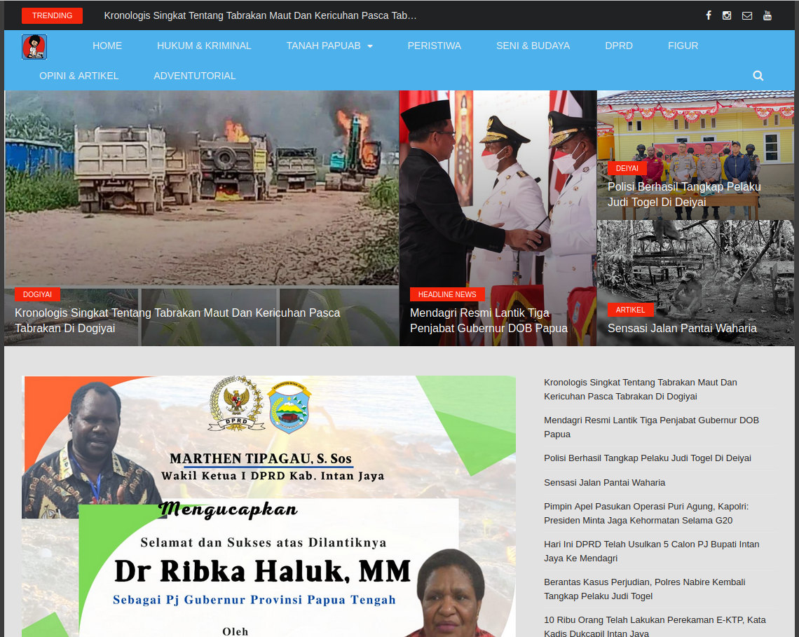

Hi, Good Day
With over 14 years of experience in software development and DevOps engineering, I specialize in building robust CI/CD pipelines, automating infrastructure with IaC, and creating scalable full-stack applications. Passionate about cloud technologies, container orchestration, and bridging the gap between development and operations.
A comprehensive toolkit for modern DevOps practices, cloud infrastructure, and full-stack development
Over a decade of experience in software development, infrastructure automation, and DevOps practices
DevOps Engineer
2018 - 2024
Fullstack Developer
2012 - 2018
Freelance Developer
2012 - Present
Showcasing projects and implementations across various technologies





